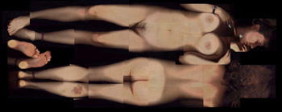

Scan eens je lief in!
zondag 27 april 2003 | Zomaar
Hopelijk krijgt dit initiatief navolging. Grote scanner kopen, lief overtuigen en beeldjes posten. Alle lof voor deze trendzetter!
Voor wie zicht afvraagt hoe de juffrouw er geassembleerd uitziet, heb ik de verschillende puzzelstukjes eens bijeengebracht. (Euh, nee, ik had niets beters te doen deze middag ;-)


Wouter Demuynck op 27 april 2003
Doet me denken aan Jennifer's Guided Body Tour uit lang vervlogen tijden.
http://www.jennicam.org/